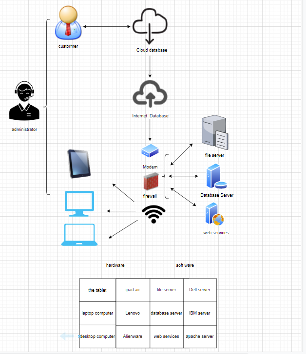
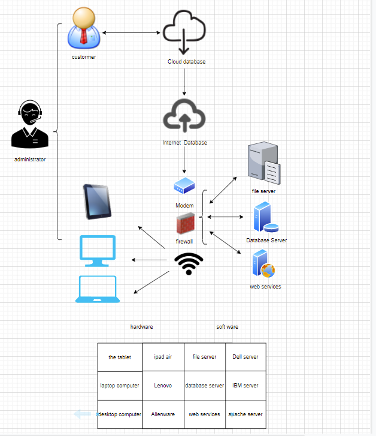

hardware
1.The tablet 2.Laptop computer 3.Desktop computer
software
1.File server 2.Database server 3.Web services
The values and methods of creating web pages
Efficient information communication can bring convenience. The Internet is an information exchange system which is not limited by time and space, and it is the most direct, richest and fastest way of contact at present. Can effectively increase the amount of information, cansave operating costs, can make information spread and update faster, can facilitate the network of business, user management. It can also improve the competitiveness of the market, but also improve efficiency, can let more people know, but also can establish more and more relationships, so creating a web page has great benefits, but also has a very important value.
| Name | Pamper HongyouXu | Gavin ChenyangYe |
|---|---|---|
| System Name | CRM | CRM |
| System Objectives | Collect customer information and manage | improve the ability of management system |
| 3 essential system features and components | 1. Acquisitions in the market 2. Follow up on cluest 3.Distribution on customers |
1. Business management 2. Business flow chart 3. After-sale management |
| 3 essential hardware from this system | 1. HUAWEI WiFi 2. lenovo computer 3. ipad air |
1. tplink WiFi 2. HUAWEI MATE40 3. ALIENWARE Computer |
| 3 essential software from this system | 1. Pfsense firewall
2. Oracle Database 12c 3. Internet Information Services (IIS) 10.0 Express |
1. Pfsense firewall
2. Oracle Database 12c 3. Internet Information Services (IIS) 10.0 Express |
| 2 external system components | 1.Automated management 2.Human Resource Management |
1. Leadership management 2. Customer service management |
| 2 system benefits | 1.Increase marketing sales 2.Reduce marketing costs |
1.Maintain old customers and find new customers 2.Familiar with the work of sales staff |
| 2 project difficulties | 1. Increased the difficulty of management 2.The system needs maintenance |
1. Internal security measures are crucial 2.Reviewing work procedures and training employees costs money |